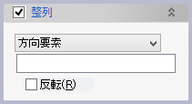

ボディの区分け
ボディの区分け
ボディからソリッドを削除してつながっている部分毎に新しいボディとして作成します。
例
２つのソリッド（緑）からソリッド(茶)を分割ソリッドとして削除を実行すると、４つソリッドが作成される例です。
(実行後のソリッドは判別するために４つそれぞれ色をかえてあります。)


操作方法
パラメータの入力後OKボタンで実行します。
パラメータ
- 対象ボディ
区分け対象のボディを選択します。(複数可）
- 分割ソリッド（オプション）
対象ボディから削除するソリッドを選択します。(複数可）
- 整列（オプション）

このコマンドで作成されたボディにはシステムが通し番号を割り振り、別の要素がボディ（やそのフェイスなど）を参照する際にはこの通し番号が使われます。通し番号はボディの座標値の大小によって決まりますが、整列オプションを利用すると任意の方向に沿った順番とすることができます。
- 関連（オプション）


作成されるボディと、対象ボディおよび分割ソリッドとの関連づけを指定して、対象ボディや分割ソリッドの変更に追従するようにできます。既定値は「フィーチャー」です。